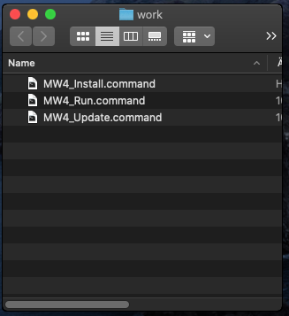
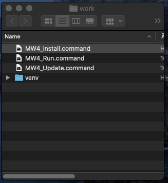
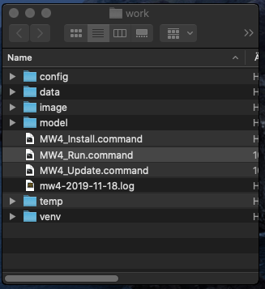

MW4 Installation¶
When starting with the installation, the installation of python3.7 should be successful finished. A good check is to open a terminal (available on all platforms) and run the command
python3.7 --version
virtualenv --version
In both cases you should see the version number of the installed and available packages. For python it should say at least 3.7.2, better 3.7.5.
To install MW4 on your computer, there are some support scripts available for Windows, OSx and Ubuntu to make it a little bit easier to install and run MW4. The scripts are online available from Github
Step 1¶
Please create a working directory of your choice and location. The directory could be renamed later on, it also could be moved to any other location. Copy the scripts for you platform into this directory.
the directory should than for OSx look like:
In Windows10 it looks like:

Note
In windows there were two parts in the folder. A power shell file with extension .ps1 and a command file with extension .cmd. Both are necessary, because without admin permissions to start a power shell files this setup is needed. Please use for the following step the install marked in red.
Warning
Please closely check if your working directory is writable. Otherwise MW4 could not work properly!
Step 2¶
- Run one of the scripts following script. During installation a terminal window might open an
show the progress of installation.
MW4_Install.cmd # Windows
MW4_Install.sh # Ubuntu
MW4_Install.command # OSx
With the script a virtual environment for python is installed in your working dir under the name “venv”. After that it installs all necessary libraries and MW4 itself into this virtual environment. So any other installation of python applications is not influenced by MW4 install.
After running the install script the directory should for OSx look like:
In Windows10 it looks like:

Please use for the following step the install marked in red.
MW4 is already installed inside the virtual environment venv in your work dir.
Warning
Please check if an online connection is available on your computer during installation as the libraries and MW4 is installed from online sources.
Step 3¶
Run one of the scripts
MW4_Run.cmd # Windows
MW4_Run.sh # Ubuntu
MW4_Tun.command # OSx
This script will start MW4 the first time and will create some subdirectories in your working folder. When starting a splash screen show the progress of it’s initialization. After first start the directory should for OSx look like:
In Windows10 it looks like:

With the first run you will see a log file written and you should have a first window from MW4 open:

If you see the upper window, you succeed and from now on you are able to customize your setup of MW4 and it’s features.
Upgrade¶
If you plan to upgrade MW4 to a newer release, you could use on of the
MW4_Update.cmd # Windows
MW4_Update.sh # Ubuntu
MW4_Update.command # OSx
scripts. In some circumstances this might be necessary, but for normal use MW4 has it’s own internal updater and using the script is not necessary.